目录
[特别感谢 Ian Kivlichan 提供了许多有用的指引（例如那篇100多年前发表在 Nature 上的论文“Vox populi”）以及宝贵的反馈。🙏 ]
高质量数据是现代深度学习模型训练的燃料。大多数特定任务的标注数据都来自人类标注，例如分类任务或用于 LLM 对齐训练的 可控神经文本生成 标注（可构造为分类形式）。本文介绍的许多机器学习技术都能帮助提升数据质量，但从根本上说，人类数据收集需要注重细节和谨慎执行。社区都知道高质量数据的价值，但我们却隐约有这样一种印象：“人人都想做模型工作，不想做数据工作”（Sambasivan et al. 2021）。
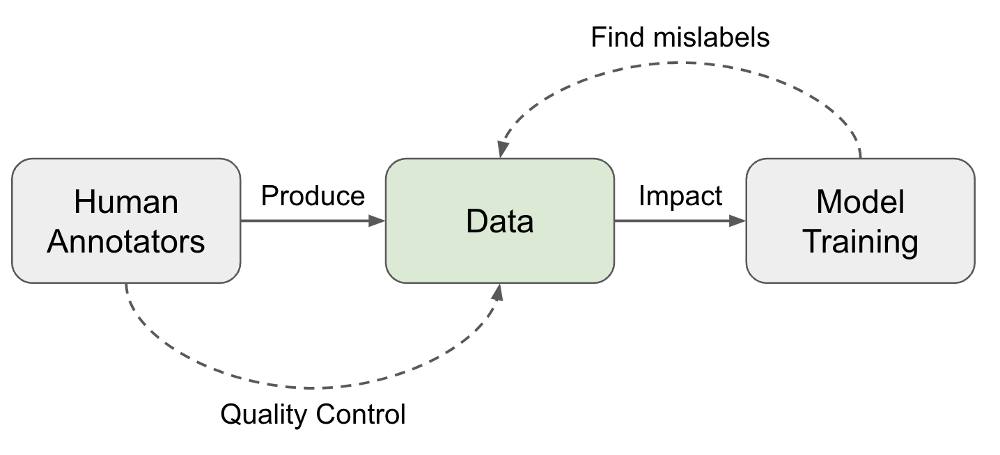
人类标注者 ↔ 数据质量#
收集人类数据涉及一系列操作步骤，每个步骤都对数据质量产生影响：
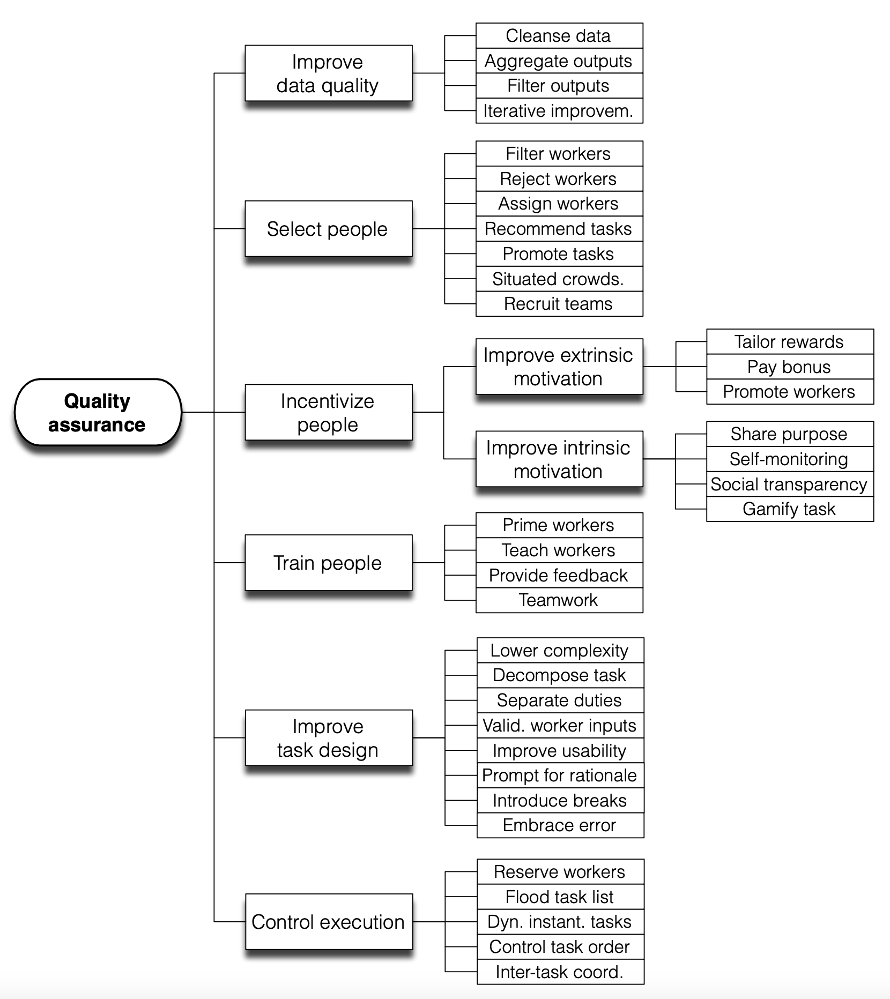
群体的智慧#
Vox populi（原为“Vox populi, vox Dei”），是一句拉丁语，意思是“人民的声音”。1907 年，《自然》杂志发表了一篇同名短文。它记录了在一次年度展览上，人们猜测一头肥牛重量以赢得奖品的事件。中位数估计被视为“人民的声音”，结果与真实重量非常接近。作者总结道：“我认为，这个结果比预期的更能证明民主判断的可信度。” 这可能是最早提及众包（“群体的智慧”）如何发挥作用的文献。
将近100年后，Callison-Burch (2009) 较早地研究了使用 Amazon Mechanical Turk (AMT) 让非专家进行机器翻译（MT）任务的人类评估，甚至依靠非专家创建新的黄金参考译文。人类评估的设置很简单：每个 turker 看到一个源句、一个参考译文，以及 5 个来自 5 个机器翻译系统的译文。他们被要求将 5 个译文从最好到最差进行排序。每项任务由 5 名 turker 完成。
不出意外，存在为了追求数量而产生低质量标注的“刷子”。因此在衡量专家与非专家之间的一致性时，需要采用不同的加权方案来降低刷子的贡献：(1)“按专家加权”：基于在 10 个黄金样本上与专家的一致率；(2)“按非专家加权”：依赖于与其他 turker 在整个数据集上的一致率。
在更难的任务中，非专家人类标注者被要求创建新的黄金参考译文。Callison-Burch 将任务设计为两个阶段，第一阶段参考机器翻译输出创建新译文，第二阶段过滤那些看起来像是机器翻译系统生成的译文。专家与众包译文之间的相关性高于专家与机器翻译系统输出之间的相关性。
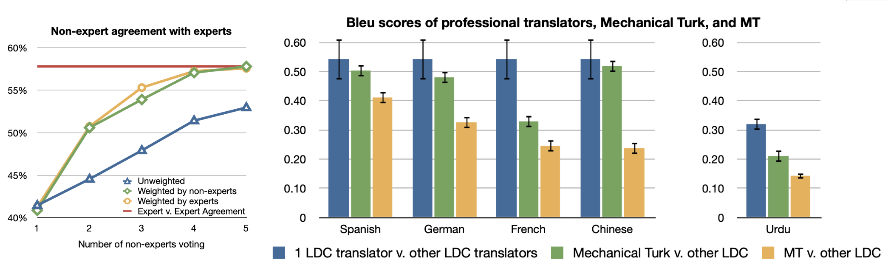
标注者一致性#
我们通常认为标注的目标是单一的真实答案，并试图用一致的标准对照一个黄金答案来评估质量。寻找可靠真实标签的常见做法是从多个标注者那里收集多个标签。假设每个标注者的质量水平不同，我们可以使用标注的加权平均，其中权重由熟练度分数决定。这个分数通常通过一个标注者与其他人的同意频率来近似。
多数投票：采用多数投票是最简单的聚合方式，等价于取一组标签的 众数。在这种设定下，每个标注者的贡献是相等的。
原始一致性（Tratz & Hovy, 2010）：原始一致性统计其他人同意他们的百分比。这与多数投票有间接相关性，因为多数类别的所有成员预计会获得更高的标注者间一致率。
Cohen’s Kappa（Landis & Koch, 1977）：Cohen’s kappa 以 \kappa = (p_o - p_e) / (1 - p_c) 的形式衡量标注者间一致性，其中 p_o 是原始一致率，p_e 是随机一致率。Cohen’s kappa 对随机一致进行了修正，但如果某个标签更常见，这个修正项可能会被高估。
概率图模型：有大量工作依赖 概率图模型 来建模标注决策中的不同因素，例如任务难度、任务潜在主题、标注者偏差、标注者信心，然后据此预测真实标签。Zheng et al. (2017) 比较了 17 种众包真实标签推断算法，其中大多数是概率图模型。
然后我们可以通过最大化观测数据的边际似然来学习 \theta, \xi，其中 A 是标注矩阵，S 是能力指示矩阵，T 是真实标签矩阵：
可以使用 EM（期望最大化）或 VB（变分贝叶斯）来最大化上述边际似然。在 EM 优化中，M-step 会在归一化前对分数计数增加一个固定值 \delta。在 VB 训练中，他们对 \theta_j 使用对称 Beta 先验，对 \xi_j 使用对称 Dirichlet 先验。在恢复正确答案时，我们可以采用按标注者 \theta 估计值加权的多数投票。
标注者分歧与两种范式#
上述聚合过程依赖于存在单一底层黄金答案的假设，因此我们可以据此评估标注者的表现。然而，在许多主题中，尤其是在安全、社会或文化领域，人们可能会产生分歧，而且这种分歧往往是合理的，这就归结为我们是想严格执行规则，还是拥抱多样性。
Aroyo & Welty (2015) 讨论了人类标注收集实践中的一系列“神话”，发现它们都存在一定的不准确性，主要发现包括：
后来，Rottger et al. (2021) 将这种差异形式化为主观 NLP 任务数据标注的两种对立范式。
| Descriptive | Prescriptive | |
|---|---|---|
| Definition | Encourage annotator subjectivity, trying to model many beliefs. | Discourage annotator subjectivity, trying to consistently apply one belief. |
| Pros | - Can help to identify which entries are more subjective; - Embrace diversity |
- More aligned with standard NLP setup. - Easier to do QC by measuring disagreement or doing label aggregation. |
| Cons | - Metrics like rater disagreement cannot be used to measure data quality or annotator performance; - Cannot be used for training models that are optimized for outputting one preset behavior. |
- Expensive and challenging to create high-quality annotation guidelines, which can never be perfect, in practice; - Training annotators to get familiar with guideline in order to apply it properly is also challenging; - Cannot capture an interpretable diversity of beliefs or consistently encode one specific belief. |
描述性范式让我们能够理解多种重要效应，并考虑到不同的视角。例如，标注者的身份（例如非裔美国人、LGBTQ）被发现是影响他们如何将身份相关内容标记为有毒的统计显著因素（Goyal et al. 2022）。主题可能是导致意见多样性的另一个主要驱动因素。Wang et al. (2023) 研究了 AI 对话系统安全性的人类评估流程，并比较了 Trust & Safety (T&S) 专业人员与众包标注者的标注结果。他们有意收集了与众包标注者相关的丰富元数据，如人口统计或行为信息。对比 T&S 专家标注与众包标注后发现，一致率在不同语义主题和严重程度下差异显著：
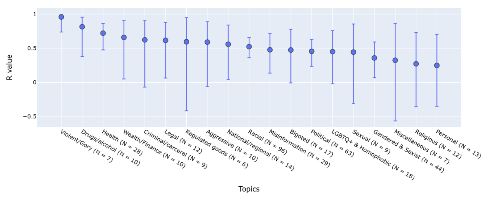
Zhang et al. (2023) 提出了一种标注者分歧分类法来分析根本原因。在列出的原因中，由于随机错误或个体层面不一致导致的分歧应当避免。当一个标注者在多次被问到同一任务时给出不同标签，其中一些最可能是人为错误所致。基于这一直觉，分歧解卷积方法（Gordon et al. 2021）通过将每个人的意见锚定在其主要标签上，从而鼓励标注者内部一致性，进而将稳定意见与错误区分开来。
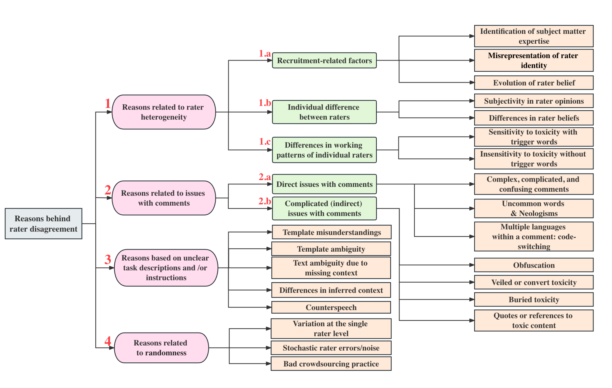
分歧解卷积依赖于概率图模型：
给定 C 类分类问题，该生成模型的采样过程如下所述：
给定可从数据中估计的真实 p(y\mid x) 和 p_\text{flip}，我们将更新主要标签的分布：
从 p^*(y \mid x) 中采样的新测试集代表了去除个体不一致噪声后的主要标签。它可以作为无噪声测试集用于评估。
为了在学习预测标签时捕捉标注者之间的系统性分歧，Davani et al. (2021) 实验了一种多标注者模型，将预测每个标注者的标签视为一个子任务。假设分类任务定义在一个标注数据集 D=(X, A, Y) 上，其中 X 是文本实例，A 是标注者集合，Y 是标注矩阵，y_{ij} \in Y 表示标注者 a_j \in A 给样本 x_i \in X 分配的二元标签。对 x_i 的多数投票记为 \bar{y}_{i,}。实验在预训练 BERT 模型之上训练一个分类头，并比较了 4 种设置：
在 GHC (Gab Hate Corpus) 数据集上的实验结果表明，多任务模型取得了最好的 F1 分数，并且能够自然地提供预测不确定性估计，与标注分歧相关。
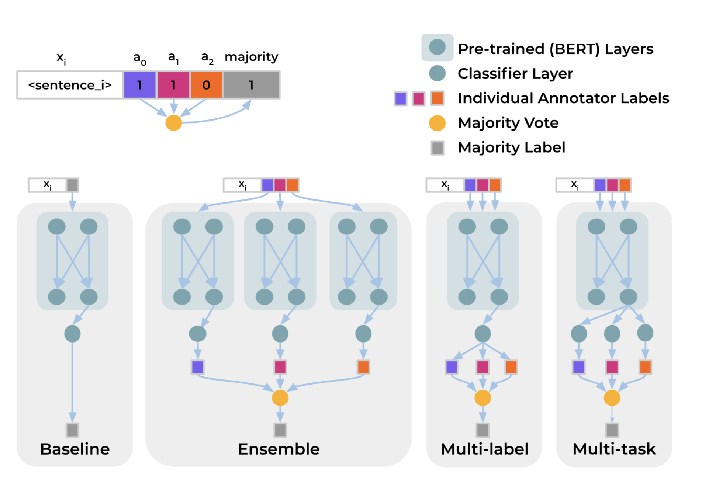
Jury Learning（Gordon et al. 2022）通过对不同标注者的标注行为进行建模（条件于他们的特征）来模拟 陪审团流程。从包含每个标注者标签和人口统计特征的数据集开始，我们训练一个模型来预测每个个体标注者（视作潜在陪审员）给出的标签。在决策时，实践者可以指定一组陪审员的构成来确定采样策略。最终决策通过聚合多次试验中陪审员的标签得出。
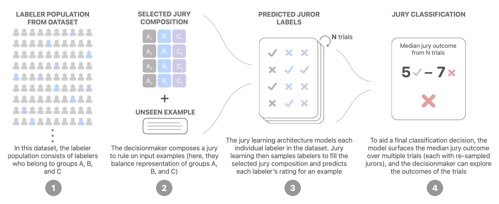
Jury Learning 模型是一个 DCN (Deep & Cross Network)，常用于推荐场景，它被联合训练以学习评论嵌入、标注者嵌入和群体（标注者特征）嵌入。文本内容由预训练 BERT 处理，该 BERT 也会被联合微调，但微调时间较短以避免过拟合。
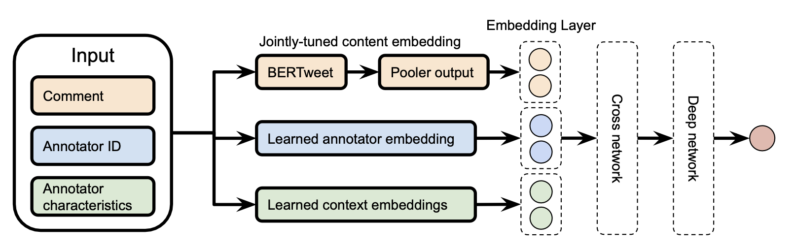
他们的实验在 toxicity diversity dataset 上运行，并将 Jury Learning 与一个不使用元数据的微调 BERT 基线模型（用于预测个体标注者标签）进行比较。性能以 MAE（平均绝对误差）衡量。Jury Learning 在完整测试集以及每个群体分段上均持续优于不区分标注者的基线。
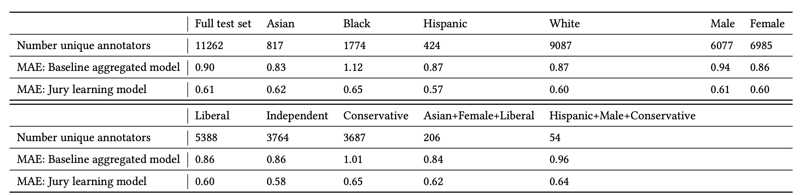
数据质量 ↔ 模型训练#
一旦构建好数据集，许多方法可以根据训练动态帮助识别错误标签。注意，我们只关注找出并排除可能标签错误的数据点，而非讨论 。数据生成：少样本学习系列之三
影响力函数#
影响力函数是稳健统计学中的经典技术（Hampel, 1974），通过描述当我们以无穷小量提高某个训练样本权重时模型参数如何变化，来衡量训练数据点的影响。Koh & Liang (2017) 将这一概念引入深度神经网络。
给定训练集中 n 个样本，对每个 i =1, \dots, n 有 z_i = (x_i, y_i)，模型参数 \theta 通过最小化损失 \hat{\theta} = \arg\min_{\theta \in \Theta} \frac{1}{n}\sum_{i=1}^n \mathcal{L}(z_i, \theta) 进行优化。移除单个数据点 z 后模型参数的变化记为 \hat{\theta}_{-z} - \hat{\theta}，其中 \hat{\theta}_{-z} = \arg\min_{\theta \in \Theta} \frac{1}{n} \sum_{z_i \neq z} \mathcal{L}(z_i, \theta)。然而，对每个样本都直接计算代价太高。一种近似方法是计算给样本 z 一个很小的权重提升 \epsilon 时的参数变化。根据定义，提升 z 权重 \epsilon 的影响力由以下公式给出：
其中 \hat{\theta}_{\epsilon,z} = \arg\min_{\theta \in \Theta} \frac{1}{n}\sum_{i=1}^n \mathcal{L}(z_i, \theta) + \epsilon L(z, \theta) 和 \mathbf{H}^{-1}_{\hat{\theta}} = \frac{1}{n}\sum_{i=1}^n \nabla^2_\theta \mathcal{L}(z_i, \hat{\theta})。 移除一个数据点 x 等价于将其权重提高 \epsilon = -\frac{1}{n}，因此 \hat{\theta}_{-z} - \hat{\theta} \approx -\frac{1}{n} \mathcal{I}_{\text{up,params}}(z)。
对测试点 z_\text{test} 的损失施加权重提升 z 的影响可通过链式法则得到：
使用影响力函数，我们可以用闭式形式衡量单个数据点对模型参数和损失函数的影响。它可以近似 leave-one-out 重新训练，而无需真正运行所有重新训练。要识别错误标注数据，我们可以计算 \mathcal{I}_\text{up,loss}(z_i, z_i)，近似如果从训练集中移除 z_i 后在 z_i 上的预测误差。
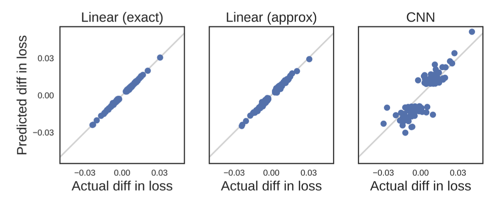
尽管有闭式形式，影响力函数仍难以扩展，因为逆 Hessian 向量积难以计算。Grosse et al. (2023) 尝试使用 EK-FAC（Eigenvalue-corrected Kronecker-Factored Approximate Curvature；George et al. 2018）近似来替代。
训练过程中的预测变化#
另一类方法是跟踪训练过程中模型预测的变化，以识别那些似乎难以学习的样本。Data Maps（Swayamdipta et al. 2020）跟踪训练期间模型行为动态的两个属性来分析数据集质量：
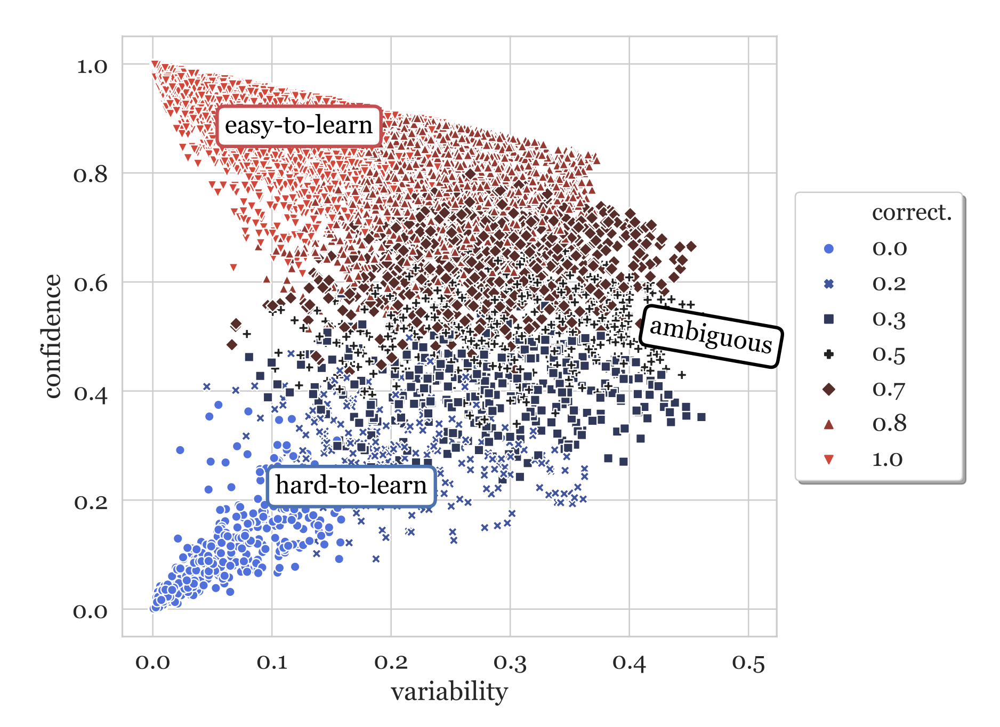
难学样本（低置信度、低变异性）更可能是被错误标注的。他们在 WinoGrande 数据集上进行了实验，将 1% 的标签翻转。经过重新训练后，被翻转的样本移到了低置信度且变异性略高的区域，表明难学区域包含错误标注样本。基于此，我们可以用置信度分数（论文未解释为何不用置信度和变异性两者作为特征）在等量翻转标签和干净样本上训练一个分类器。这个简单的噪声分类器随后可用于原始数据集来识别潜在的错误标注样本。
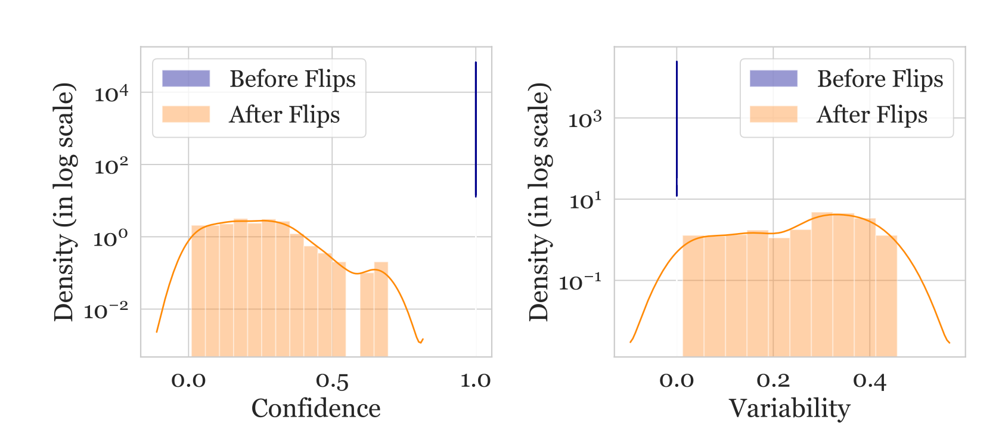
然而，我们不应认为所有难学样本都是错误的。事实上，论文假设模糊（高变异性）和难学（低置信度、低变异性）样本对学习更有信息量。实验表明，它们有利于 OOD 泛化，即使与 100% 训练集相比，也能在 OOD 评估上取得更好的结果。
为了研究神经网络是否倾向于遗忘先前学到的信息，Toneva et al. (2019) 设计了一个实验：他们在训练过程中跟踪每个样本的模型预测，并统计每个样本从正确分类到错误分类或反之的转换次数。然后可以据此对样本进行分类：
他们发现存在大量一旦学会就永远不会被遗忘的不可遗忘样本。带有噪声标签或具有“不常见”特征（视觉上难以分类）的图像是最常被遗忘的样本。实验从经验上验证了不可遗忘样本可以安全移除而不会损害模型性能。
在实现中，仅当样本出现在当前训练批次中时才统计遗忘事件；即他们在后续小批次呈现同一样本时计算跨批次的遗忘。每个样本的遗忘事件数量在不同随机种子下相当稳定，可遗忘样本有较小的倾向在训练后期才首次被学会。遗忘事件也被发现可以在整个训练期间以及不同架构之间迁移。
Pleiss, et al. (2020) 提出了一种名为 AUM（Area under the Margin，边际曲线下面积）的方法，根据以下假设来发现错误标签：假设一张 BIRD 图片被错误标记为 DOG。梯度更新会鼓励从其他 BIRD 图片泛化到这张 BIRD 图片，而 DOG 标签则提供错误的监督信号，促使更新走向另一个方向。因此，在梯度更新信号中存在泛化与（错误）预测之间的张力。
给定分类数据集 (\mathbf{x}, y) \in \mathcal{D}_\text{train}，令 z^{(t)}_i(\mathbf{x}) \in \mathbb{R} 为第 t 个 epoch 中类别 i 对应的 logit。第 t 个 epoch 的边际是分配的 logit 与下一个最大 logit 之间的差值：
负边际表示预测错误，正边际较大则表示对正确预测有高置信度。假设是，由于其他样本通过 SGD 触发的泛化张力，错误标注样本的边际会比正确样本小。
为了确定阈值，他们插入了名为“阈值样本”的伪数据来确定阈值：
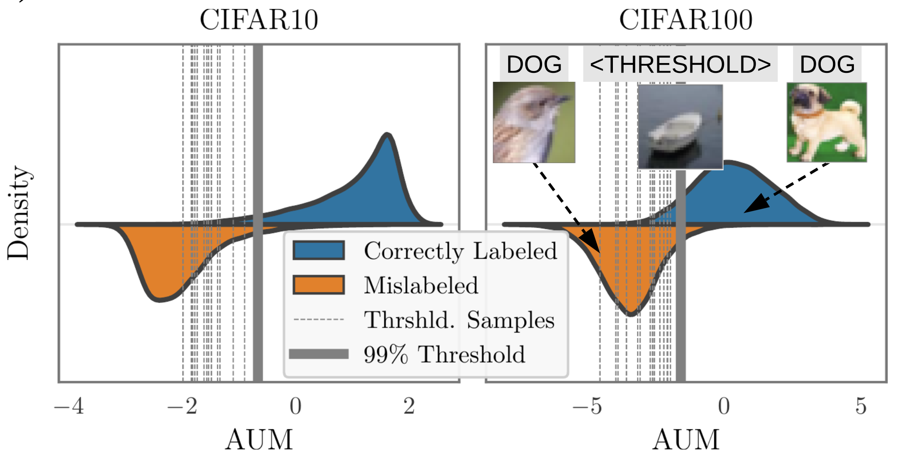
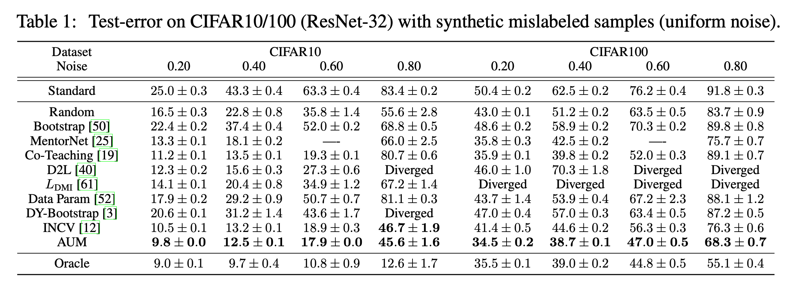
噪声交叉验证#
NCV（Noisy Cross-Validation，噪声交叉验证）方法（Chen et al. 2019）将数据集随机分成两半，然后如果样本的标签与其仅在另一半数据集上训练的模型所预测的标签一致，则将其识别为“干净”样本。干净样本被认为更可信。INCV（Iterative Noisy Cross-Validation，迭代噪声交叉验证）迭代运行 NCV，将更多干净样本加入可信候选集 \mathcal{C}，并移除更多噪声样本。
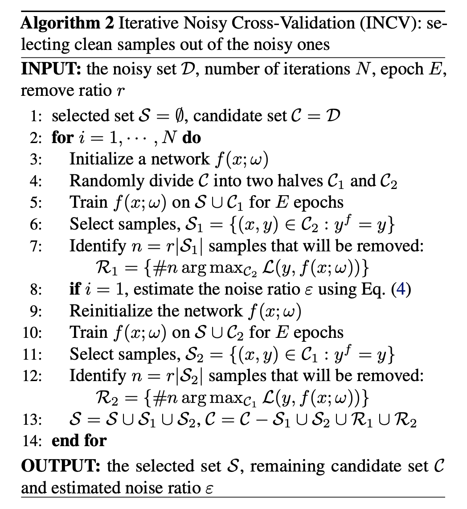
引用#
引用方式：
Weng, Lilian. (2024 年 2 月). “Thinking about High-Quality Human Data”. Lil’Log. https://lilianweng.github.io/posts/2024-02-05-human-data-quality/.
@article{weng2024humandata,
title = "Thinking about High-Quality Human Data",
author = "Weng, Lilian",
journal = "lilianweng.github.io",
year = "2024",
month = "Feb",
url = "https://lilianweng.github.io/posts/2024-02-05-human-data-quality/"
}
参考文献#
[1] Francis Galton “Vox populi” Nature 75, 450-451 (1907).
[2] Sambasivan et al. “Everyone wants to do the model work, not the data work”: Data Cascades in High-Stakes AI" CHI 2021
[3] Chris Callison-Burch. “Fast, Cheap, and Creative: Evaluating Translation Quality Using Amazon’s Mechanical Turk” EMNLP 2009
[4] Rottger et al. “Two Contrasting Data Annotation Paradigms for Subjective NLP Tasks” NAACL 2022.
[5] Aroyo & Welty “Truth Is a Lie: Crowd Truth and the Seven Myths of Human Annotation” AI Magazine 36.1: 15-24 (2015).
[6] Hovy et al. “Learning Whom to Trust with MACE” NAACL-HLT 2013.
[7] Wang et al. “All that Agrees Is Not Gold: Evaluating Ground Truth Labels and Dialogue Content for Safety” 2023.
[8] Zhang et al. “A Taxonomy of Rater Disagreements: Surveying Challenges & Opportunities from the Perspective of Annotating Online Toxicity” arXiv preprint arXiv:2311.04345 (2023).
[9] Davani et al. “Dealing with disagreements: Looking beyond the majority vote in subjective annotations” ACL 2022.
[10] Gordon et al. “Jury Learning: Integrating Dissenting Voices into Machine Learning Models” CHI 2022.
[11] Gordon et al. “The Disagreement Deconvolution: Bringing Machine Learning Performance Metrics In Line With Reality” CHI 2021
[12] Daniel et al. 2018 “Quality Control in Crowdsourcing: A Survey of Quality Attributes, Assessment Techniques, and Assurance Actions” ACM Computing Surveys (CSUR), 51(1), 1-40 (2018).
[13] Koh & Liang. “Understanding Black-box Predictions via Influence Functions” ICML 2017.
[14] Grosse et al. “Studying Large Language Model Generalization with Influence Functions” arXiv preprint arXiv:2308.03296 (2023).
[15] Swayamdipta et al. “Dataset Cartography: Mapping and Diagnosing Datasets with Training Dynamics” EMNLP 2020.
[16] Toneva, et al. “An Empirical Study of Example Forgetting during Deep Neural Network Learning” ICLR 2019.
[17] Pleiss, et al. “Identifying Mislabeled Data using the Area Under the Margin Ranking” NeurIPS 2020.
[18] Chen et al. “Understanding and utilizing deep neural networks trained with noisy labels” ICML 2019.